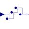
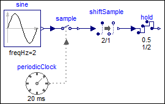
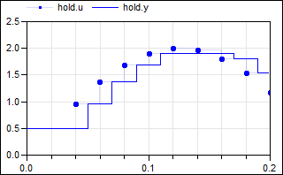

HoldWithDAeffectsHold with (simulated) Digital-Analog converter effects and computational delay |

|
Diagram
{kind=link}
Information
This information is part of the Modelica Standard Library maintained by the Modelica Association.
This block is similar to the Hold block. The only difference is that simulated real-world effects are applied on the clocked input signal u before transforming the signal to a continuous-time signal with a zero-order hold. In particular:
- The output is delayed by a fraction of the clock period, if parameter computationalDelay = true. The delay is defined by shiftCounter/resolution*interval(), where shiftCounter and resolution are Integer parameters and interval() is the time duration from the previous to the current clock tick. The maximal possible computational delay is one clock duration, and therefore there is the restriction that shiftCounter ≤ resolution.
- The output is limited, if parameter limited = true.
- The output is value discretized in the form of an Digital-Analog converter with a definable number of bits, if parameters limited = true, and quantized = true.
Example
The following example samples a sine signal with an amplitude of 2.0 with a periodic clock of 20 ms period and delays it for 2 sample periods. The resulting signal is hold with the HoldWithDAeffects block. As a result, the clock of hold.u starts ticking at 40 ms. The output hold.y of the block is a continuous-time signal that is present from the start of the simulation. Before the first tick of the clock of hold.u, it is set to 0.5 (= the value of parameter hold.y_start). Additionally, the following effects are added to the hold block:
- The output is limited to +/- 1.9.
- A computational delay of half of a sample period (= 1/2*20 ms = 10 ms)
is defined.
|  |  | |
| model | simulation result |
Due to the limitation of the output signal, the values of hold.u ≥ 1.9
are limited to 1.9.
If the hold output is delayed by one sample period, then the previous(…) value of the
input is output, and the first tick is delayed by one sample period,
as shown by the
modified example
from above:
 |
 |
|
| model | simulation result |
Note, the computational delay of one sample period is defined
by shiftCounter=1, resolution=1, as shown in the icon of the
hold block.
Parameters (9)
| y_start |
Value: 0.0 Type: Real Description: Value of output y before the first tick of the clock associated to input u |
|---|---|
| computationalDelay |
Value: false Type: Boolean Description: =true, if a computational delay should be imposed |
| shiftCounter |
Value: 0 Type: Integer Description: (min=0, max=resolution), computational delay = interval()*shiftCounter/resolution |
| resolution |
Value: 1 Type: Integer Description: Time quantization resolution of sample interval |
| limited |
Value: false Type: Boolean Description: = true, if output is limited |
| quantized |
Value: false Type: Boolean Description: = true, if output quantization effects included |
| yMax |
Value: 1 Type: Real Description: Upper limit of output (if limited = true) |
| yMin |
Value: -yMax Type: Real Description: Lower limit of output (if limited = true) |
| bits |
Value: 8 Type: Integer Description: Number of bits of quantization (if quantized = true) |
Connectors (2)
| u |
Type: RealInput Description: Connector of clocked, Real input signal |
|
|---|---|---|
| y |
Type: RealOutput Description: Connector of continuous-time, Real output signal |
Components (4)
| limiter |
Type: Limiter |
|
|---|---|---|
| quantization |
Type: Quantization |
|
| compDelay |
Type: ComputationalDelay |
|
| hold1 |
Type: Hold |
Used in Examples (3)
|
Modelica.Clocked.Examples.SimpleControlledDrive Simple controlled drive with discrete controller and simulated AD and DA effects |
|
|
Modelica.Clocked.Examples.Elementary.RealSignals Example of a HoldWithDAeffects block for Real signals |
|
|
Modelica.Clocked.Examples.Elementary.RealSignals Example of a HoldWithDAeffects block for Real signals (with a computational delay of one sample period) |